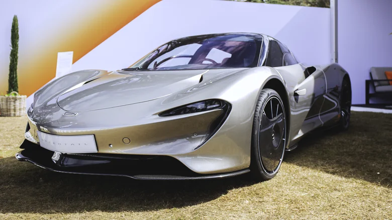
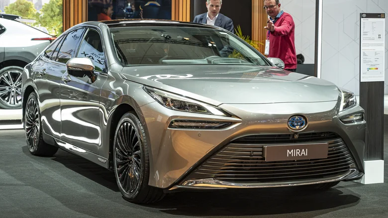

Samochody klasyczne
Lamborghini Miura
Considered by some to be the sexiest car ever built, the Miura debuted in 1966 as a sleek mid-engine speedster designed to challenge Ferrari. "Piloting the Miura transcends driving experience to become a life experience," Hagerty says. "If the sound of six carburetors feeding a thirsty, vibrating V-12 moored right behind your head isn't enough, it's also arguably the most beautiful car ever produced." To buy one, contact the Lamborghini Club America or an auction house like RM Sotheby's or Gooding & Co. They're usually in the know about the cars before they reach the general market.

Mercedes SL 300 Gullwing
Among the first sports cars of the post-war era, the Mercedes SL 300 Gullwing was the fastest production car of its time when it was introduced in 1954. As the first direct fuel injection series production car, the SL 300 could travel at an eye-popping 160 miles per hour. "Nobody expected something like that from Mercedes," says Constantin von Kageneck, a specialist in classic car marketing at the Mercedes-Benz Classic Center in Irvine, CA. Though about three-quarters of the original SL 300's survive today, many still belong to their original owners. To see one, visit the Classic Center or an automotive museum like the Petersen in Los Angeles.

Samochody futurustyczne
McLaren Speedtail
As McLaren's first 250 mph car, it's little surprise to find out that the Speedtail took some clever engineering to make it a reality. Getting a car to this speed requires both plenty of power and minimal drag, and McLaren dealt with the former by installing a 1,055 horsepower hybrid gas-electric powertrain. To achieve the latter, the car's body shell was stretched to over 17 feet long, and even the mirrors were removed and replaced with side-mounted cameras.
Perhaps the Speedtail's most striking innovation, however, is one that's nearly invisible. The carbon fiber bodywork at the rear of the car is built to be flexible, creating "active rear ailerons" that can be hydraulically adjusted to change the car's shape. This allows for optimal airflow at top speed, without the need for a large rear wing or any of the usual downforce-inducing aero bits. With a price tag of around $2.3 million and a limited production run of 106 units, this innovative flexible bodywork can only be admired by the Speedtail's billionaire collectors. However, as major automakers look for ways to reduce drag and optimize airflow to squeeze every last mile of range out of their EVs, there's a chance that flexible bodywork might yet feature on more affordable cars in the future.
Toyota Mirai
With the race to create sustainably-powered cars now led by battery EVs, hydrogen-powered cars occupy a strange space in the industry. Hydrogen adoption is a bit of a chicken-and-egg scenario: for buyers to make the switch, there needs to be plenty of existing hydrogen infrastructure. But in order for that infrastructure to be built, there needs to be plenty of hydrogen cars on the road to justify building it. The biggest manufacturer to have remained committed to hydrogen since the tech's earliest days is Toyota, which recently launched a second generation of its only hydrogen production car, the Mirai.
At present, it's limited to places where hydrogen filling stations are accessible, which is almost exclusively California. Of course, it's possible that hydrogen cars will never gain mainstream adoption, but there is evidence to suggest they might still become popular eventually. Years after it abandoned its initial hydrogen efforts, BMW recently announced it was launching a pilot fleet of iX5 cars in Europe, with the idea of "paving the way for potential series production." Hyundai also currently sells its hydrogen-powered NEXO in California, albeit in small numbers. Hydrogen cars solve two of the biggest problems with BEVs: they can be refilled in a few minutes, and their range is similar to that of a gas-powered car. If hydrogen infrastructure can be upgraded, it's still possible the tech could properly take off. In that sense, the Mirai might be just ahead of its time.
